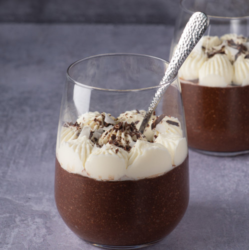

Chocolate Jello is delicious!

Chocolate Pudding or Jello is delicious. Chocolately, silky and smooth. What is not to love? The best way to enjoy it is without cocoa solids, hydrolized milk proteins or yellow #5 . For anyone who loves dessert, why not make your own?
Of course this not a proper recipe so don't use this, please go to All Recipes for proper information.
Ingredients
- Whole Milk
- Sugar
- Cocoa Powder
- Sugar
- Corn starch
- Vanilla
- Butter
- Whipped cream
- Shaved chocolate
- Ground nuts (optional)
- Dark rum (optional)
Preparation
- Go to the grocery store
- Buy ingrediants listed above, this is a shortcut as travelling to africa or south america for cocoa and sugar is time consuming
- Turn on stove to medium heat
- Mix everything (except butter, rum, whipped cream, vanilla ) with the milk slowly otherwise it will get lumpy
- Heat and stir until it becomes a pudding
- Add rum, butter, vanilla
- Chill in fridge
- Top with whip cream and shaved chocolate
Enjoy!
Note: Add just enough rum to flavor it. We are not trying to make boozy dessert here.